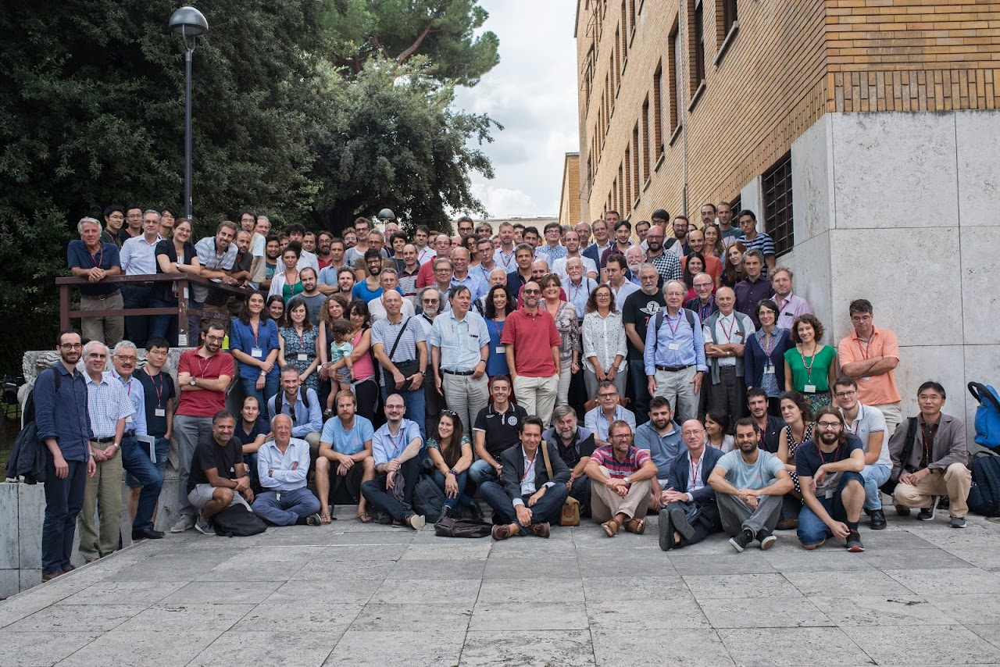

Organized conferences #
A list of conferences organized during the years in different venues.

2023 - Analytical Approaches for Neural Network Dynamics
A workshop in Paris to bring together researchers for an informal and open discussion on the most promising research directions in neural network dynamics. Organised with Bruno Loureiro and Stefano Sarao Mannelli.
2023 - Disordered Systems Days at King’s College London
The KCL Disordered Systems group organised a two-day event on the physics of disorder. The first day of the event has been dedicated to our dear colleague Reimer Kühn, who retired in 2023.
2022 - The many facets of Statistical Field Theory
A conference on Statistical Field Theory, Statistical Physics and their interdisciplinary applications in Trieste, in honour of Sergio Caracciolo’s 70th birthday.
2022 - Conference of the Middle European Cooperation in Statistical Physics MECO47
The traditional Conference of the Middle European Cooperation in Statistical Physics was organised in 2022 by Silvia Bartolucci, Laura Foini, Pierpaolo Vivo and myself in Erice.
2022 - 73rd British Mathematical Colloquium
The British Mathematical Colloquium has been hosted in 2022 at King’s College London, and included a special session on complex systems with a list of prestigious guests including Andrea Montanari and Vittoria Colizza.
2019 - 40 years of Replica Symmetry Breaking
A large event on 40th anniversary of the discovery of Replica Symmetry Breaking brings together in Rome researchers who developed, refined and applied RSB from a broad cross-section of the theoretical community.
2018 - Disordered serendipity: a glassy path to discovery
A conference at Sapienza University of Rome to celebrate the outstanding scientific achievement of Giorgio Parisi in occasion of his 70th birthday.
2017 - Beyond Mean Field Theory: Renormalisation Group and Non Perturbative approaches to Disordered and Glassy Systems
A three day workshop in Rome dedicated to Cirano De Dominicis, pioneer in the field theoretical approach to Spin Glasses.
Invited talks #
2024 Roc(k)in’AI, Roccella Jonica (Italy).
2022 Youth in High-Dimensions, ICTP, Trieste (Italy).
2021 Combinatorial probability Virtual Opening Workshop, SAMSI (USA — Online).
2020 Recent progress in glassy systems, Les Houches (France).
2019 People in optimal transportation and applications, Cortona (Italy).
Conference service #
2025 Area chair at NeurIPS and ICML.
2024 Area chair at NeurIPS and ICML.